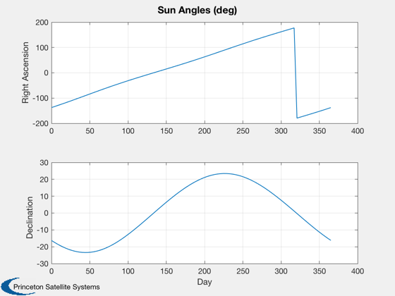
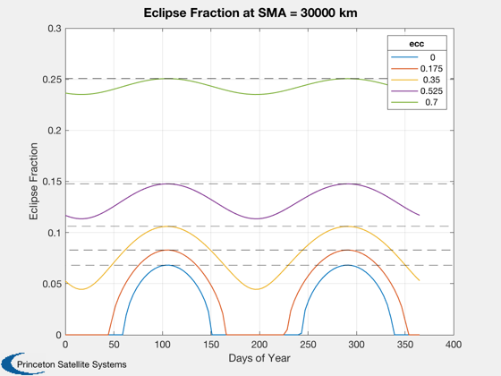
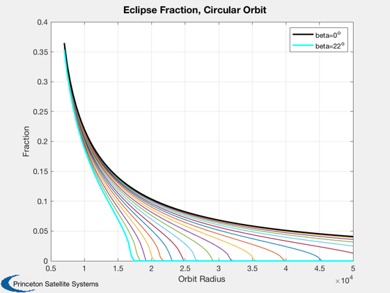

Contents
Eclipse analysis
Plot the eclipse duration for eccentric orbits over a year.
See also: EclipseDuration, Plot2D
%-------------------------------------------------------------------------- % Copyright (c) 2018,2019 Princeton Satellite Systems, Inc. % All rights reserved. %-------------------------------------------------------------------------- % sun angles over a year days = linspace(0,365); jDs = Date2JD+days; uSun = SunV1(jDs); [rASun, decSun] = U2RADec( uSun ); Plot2D(days,[rASun decSun]'*180/pi,'Day',{'Right Ascension','Declination'},... 'Sun Angles (deg)') sdSun = sin(decSun); cdSun = cos(decSun);
Orbit study with eccentricity
sma = 30000; inc = 0.2; raan = 0.8; ecc = 0.01; ecc = linspace(0,0.7,5); rE = 6378.165; nP = length(jDs); durs = zeros(length(ecc),nP); beta = zeros(1,nP); for k = 1:length(ecc) % pergiee rP = A2Perige( sma, ecc(k) ); beta = asin( cos(inc)*(sdSun-cdSun*tan(inc).*sin(rASun-raan)) ); arg = sqrt(1 - (rE/rP)^2)*(1./cos(beta)); j = find( arg < 1 ); durs(k,:) = zeros(1,nP); durs(k,j) = acos( arg(j) )/pi; fractionRP(k) = EclipseDuration( rP, 6378, 0 ); end dMax = max(durs'); dursAbs = durs*Period(sma); titleStr = sprintf('Eclipse Fraction at SMA = %d km',sma); [~,ll] = Plot2D(days,durs,'Days of Year','Eclipse Fraction',titleStr); yy = axis; hold on; for k = 1:length(ecc) plot(yy(1:2),fractionRP(k)*[1 1],'k--') end hl = legend(ll.h,num2str(ecc')); hl.Title.String = 'ecc';
Circular orbit variation with beta
beta = linspace(0,22*pi/180,20); rSC = linspace(7000,50000); fractionOfOrbit = EclipseDuration( rSC, 6378, beta ); Plot2D(rSC,fractionOfOrbit','Orbit Radius','Fraction','Eclipse Fraction, Circular Orbit') hold on lh1 = plot(rSC,fractionOfOrbit(:,1)','k','linewidth',2); lh2 = plot(rSC,fractionOfOrbit(:,end)','c','linewidth',2); legend([lh1 lh2],'beta=0^o','beta=22^o') %--------------------------------------